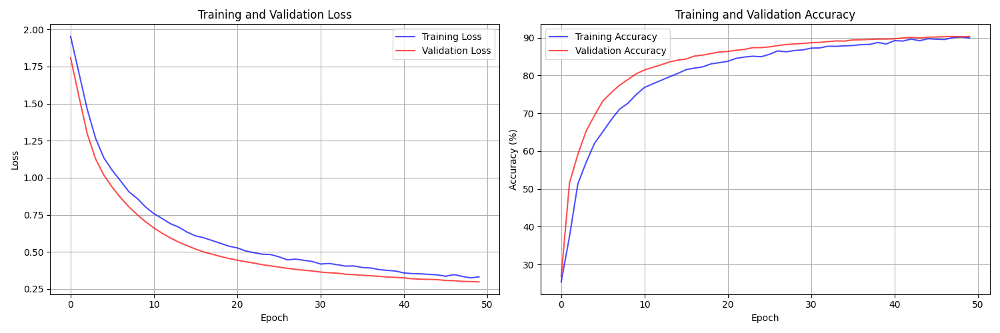
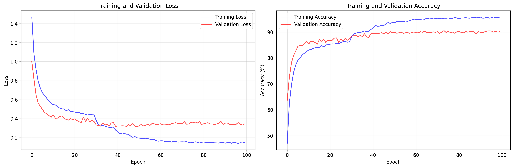
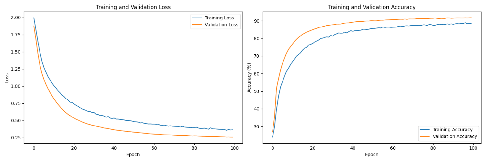
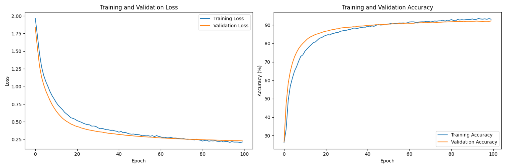

Millimeter-wave (mmWave) small cell networks play an important role in 5G wireless communication systems.
By densely deploying a large number of mmWave small cell base stations (SBSs), thousands of connections
and high transmission rates are supported to provide a variety of local services.
The SBS provides short-range communications to mobile terminals (MTs) to reduce the propagation loss of
signal transmission. With the help of mmWave, multiple SBSs can utilize a large number of antennas
to form directional analog beams to MTs and provide concurrent transmissions simultaneously. However,
as the number of SBSs and MTs increases, it becomes increasingly difficult to use traditional signal
processing methods to improve performance.
In the original paper, the authors follow a 3-step process:
1. Random Distribution Modeling:
The large random distribution of SBSs is modeled by a heterogeneous Poisson point process (HPPP),
where the average sum rate (ASR) of MT under concurrent transmission can be obtained.
2. Machine Learning for Beam Selection:
Downlink SBS conditions are established as a large database for machine learning training. An iterative
support vector machine (SVM) classifier is proposed for analog beam selection of each SBS.
3. Iterative SMO Algorithm:
An iterative sequential minimal optimization (SMO) training algorithm is proposed, enabling SBSs to perform
highly efficient and low-complexity analog beam selection during concurrent transmissions.
For our project, we attempt to utilize machine learning (ML) to show a novel ML-based method for concurrent transmission in mmWave small cell networks and compare various methods with one another.
Terminology
1. CodeBook :
A codebook in beamforming is a collection of predefined
candidate beamforming vectors. Each vector represents a specific configuration
of phase shifts across the antennas of the SBS. These configurations determine the direction
and focus of the transmitted signal.
Mathematical Definition
The codebook $C$ contains $N_C$ candidate vectors,
\(C = \{ c_{1}^S, c_{2}^S, \dots , c_{N_C}^S \} \), where
\(c_i^S \in \mathbb{C}^{N_{SBS} \times 1} \text{ for } i = 1, 2, \dots , N_C\)
Each $c_i^{S}$ is a normalized beamforming vector:
Each vector in the codebook points the beam in a different direction, enabling the SBS to focus
its transmission on specific targets (MTs).
2. Average Sum Rate of Concurrent Transmissions:
The MT can be simultaneously served by multiple mmWave SBSs with the SBS density λS. Based on the statistical property of HPPP, the probability of SBS number in the R radius circular area satisfies:
where SNRS,k = PS,k‖HS,kcS,k‖²/(NSBSσ²) is the MT signal to noise (SNR) of the concurrent transmission from all SBS.
In other words, given two SBSs and one MT, if we were to independently choose the beam that maximizes the SNR value, then we would maximize the average sum rate of concurrent transmissions.
Data Generation
The first (and typically most important) step of any ML-based project is to collect lots of good data.
Problem is... we don't have access to this data, and most papers on beamforming do not share their data.
As a result, we had to implement our own data generation script that follows the paper's implementaiton.
This meant curating a large dataset that followed a HPPP. Here are the system parameters:
$\lambda_S = 1 \cdot 10^{-4}m^{-2}$: The density of our Heterogeneous Poisson point process.
$P_S = 20$ dBm: The maximum SPS power.
$L = 2$: The number of propagation paths.
$N_{MT} = 2$: The number of MT antennas.
$N_{SBS} = 32$: The number of SBS antennas.
$R = 100$m: The maximum MT communication radius.
$N_C = 9$: The number of candidate vectors.
$f = 28$ GHz: Carrier frequency
$λ = c/f$: Wavelength
$k = 2π/λ$: Wave number
$D_MT = D_SBS = λ/2$: Antenna spacing
In addition to that, we can now derive that the average number of SBS's in a circular area around our MT is
Furthermore, if we define the data stream from the $k$th SBS to our MT as $d_{S, k}$, where $1 \leq k \leq N_S$, and the transmit power of our SBS as $P_{S, k}$, then our downlink signal of our SBS can be derived as
where $c_{S, k}$ is the $k$th SBS's analog beam (which directly points to the MT through the use of phase shifters). Our channel propagation for the $k$th SBS is actually based on the Saleh-Valenzuela model, a narrow band clustered channel model:
Features matrix $\mathbf{X} \in \mathbb{R}^{N_{samples} \times N_{features}}$
Labels vector $\mathbf{y} \in \mathbb{Z}^{N_{samples}}$, where $y_i \in [0, N_C-1]$
Notes:
1. The noise power $N_0$ is set to $10^{-13}$ W
2. Channel matrix $\mathbf{H} \in \mathbb{C}^{N_{MT} \times N_{SBS}}$
3. Each codebook vector $\mathbf{c}_i$ is normalized: $\|\mathbf{c}_i\|^2 = 1$
4. Path gains $\alpha_l$ follow complex normal distribution
5. Feature vector dimension: $N_{features} = 2L + 2L + 2(N_{MT} \cdot N_{SBS})$
Why use SMOs?
One of the main problems we face here is that small base stations are very densely deployed, and their placements are changing with every snapshot.
This leads us to create training samples that use multiple snapshots of SBSs with the same density, as it allows us to improve our variance in our samples.
Each training sample will contain the following, assuming we have $L$ propagation paths:
Transmit power
Path loss
$2L$ azimuth angles, one for the angle of arrival and one for the angle of departure for each path.
$2L$ real and imaginary parts for the complex gain.
We normalize our samples in order to prevent any inconsistencies from differing range values. For instance, all angles will be between $0$ and $2\pi$, all power will be measured in dB, etc.
In total, every sample will be formatted as a vector of dimension $1 \times (4L + 2)$.
If we were to use a traditional SVM, then we'd end up using $N_C$ separate classifiers in order to find hyperplanes that can cleanly separate our data. However, our data can be incredibly imbalanced (such as some beams having much fewer samples than other beams), which can introduce heavy bias and inaccurate predictions.
Therefore, by using a data-driven iterative SVM classifier, we can better address the issue of imbalanced data and ensure better prediction accuracy for analog beam selection.
Specifically, we can perform resampling/reweighting with our samples to deploy a more iterative process with each learning step to improve refinement.
We first choose a subset of two candidate vectors from our set of $N_C$ candidate vectors, and use these two vectors to classify our training samples into two groups.
After each classification, one vector from our chosen two vectors is replaced by a new candidate vector not choosed before, and we repeat this process. In fact, this process will continue for $N_C - 1$ iterations (because by then each of our $N_C$ candidate vectors would have been chosen), making use of the SMO algorithm to train our SVM at each iteration.
Naive NN
The MmWaveNN is a fully connected feedforward neural network designed for beam selection in mmWave communication systems.
It uses a series of linear layers, activation functions, and dropout to prevent overfitting and enhance generalization.
Input Layer: Accepts input features of size input_size.
Hidden Layer 1:
Linear transformation to hidden_size dimensions.
Applies ReLU activation.
Dropout with probability 0.3.
Hidden Layer 2:
Linear transformation to hidden_size // 2 dimensions.
Applies ReLU activation.
Dropout with probability 0.3.
Output Layer: Linear transformation to num_classes dimensions, corresponding to the number of beamforming classes.
Training Process
The model is trained using the following process:
Uses the CrossEntropyLoss as the loss function to handle multi-class classification tasks.
The Adam Optimizer adjusts weights to minimize the loss function.
During each epoch:
The model processes input data in batches from train_loader.
Loss is computed, backpropagated, and the optimizer updates weights accordingly.
Model accuracy and loss are tracked per batch.
Overall, a very Naive NN with some basic features.
Advanced NN
The AdvancedMmWaveNN is a more advanced neural network model designed for beam selection in mmWave communication systems.
It combines feature extraction, attention mechanisms, and residual learning to improve classification performance.
Model Components
Initial Feature Extraction:
Transforms the input data to a higher-dimensional space using a linear layer.
Batch normalization, ReLU activation, and dropout (p=0.2) are applied to stabilize and regularize the model.
Parallel Branches:
Spatial Branch: Extracts spatial features using a sub-network.
Channel Branch: Extracts channel-wise features using another sub-network.
Both branches employ linear layers, batch normalization, ReLU activation, and dropout.
Attention Mechanisms:
Spatial Attention: Computes attention weights for spatial features.
Channel Attention: Computes attention weights for channel features.
Residual Blocks:
Uses 3 residual blocks to refine the combined features.
Each block contains two linear layers, batch normalization, ReLU activation, and a shortcut connection to preserve feature information.
Classifier:
Processes the refined features through multiple linear layers with batch normalization, ReLU activation, and dropout.
Outputs the final predictions across num_classes.
Training Process
The training procedure includes:
Loss Function: Uses CrossEntropyLoss for multi-class classification.
Optimizer: Typically employs Adam to optimize weights.
Gradient Clipping: Gradients are clipped to a maximum norm of 1.0 to prevent exploding gradients.
Training Loop:
Processes input data in batches from train_loader.
Computes the loss, performs backpropagation, and updates weights.
Tracks running loss and classification accuracy for each epoch.
Training Results
Below are the training histories for the different NN complexities, the normal SVM classifier, and Data-Driven Iterative SVM classifier:

Figure 1: Training History for the Naive NN (Best Acc: 90.47%)

Figure 2: Training History for the Advanced NN (Best Acc: 90.89%)

Figure 3: Training History for the normal SVM classifier (Best Acc: 91.18%)

Figure 4: Training History for the Data-Driven Iterative SVM classifier (Best Acc: 94.01%)
Final Thoughts and Future Modifications
From the data, we see that the iterative data-driven SVM classifier with SMO had the best accuracy. Furthermore, this version would scale the best out of the four, as the iterative nature of this implementation allows for more candidate vectors to be added to the network (via a HPPP distribution) without the runtime scaling up exponentially. Our normal SVM implementation, since it uses the "one-to-one" approach, will increase dramatically in runtime with every new candidate vector that gets added.
However, one of the main hurdles in our project was generating data that stayed true to the data used in the original paper. We went through many different types of datasets before we finally landed on a script that gave us the most accurate dataset (relative to the paper's dataset). It would've been very helpful if the paper provided the dataset they used for their own simulations.
In terms of future improvements, one idea we could implement is PCA, as this would help reduce the dimenionality problem (there are many features that need be juggled when running these models), and thereby reducing runtime while still keeping accuracy relatively high.
Furthermore, the paper had many more than just one mobile terminal, resulting in a more realistic network in terms of concurrent transmission. While we attempted to have multiple MT, this dramatically increased runtime, making our models unusable. If we were to get a hold on more sophisticated GPU's for faster computing, we could implement our models to house multiple MT's.